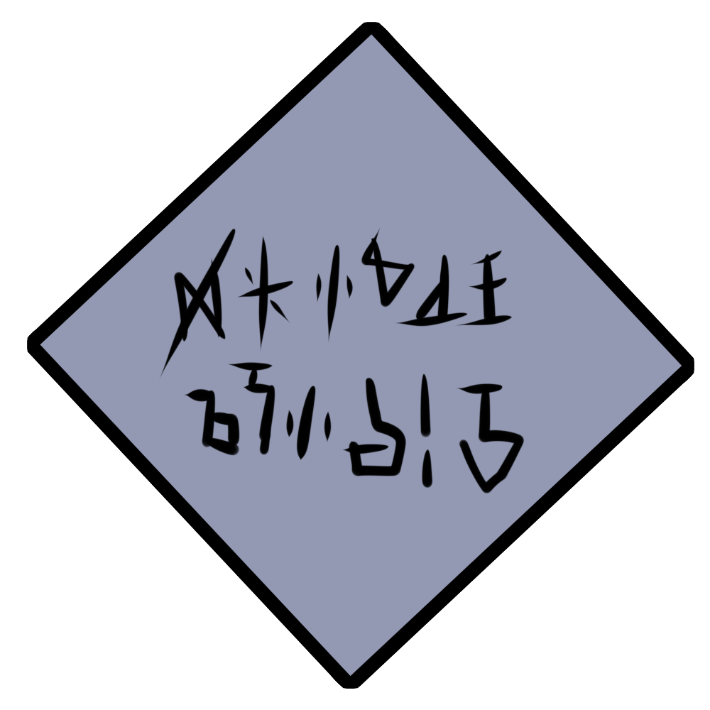

Magic is a common sight in Fortitude, as Drace taught the people here how to handle it safely. However among them are those determined to understand the full extent of what magic can do.
These people and Drace are more than magicians, as they work to study magic as their faith, and are often reveered by the people of Fortitude for the seemingly miraclous deeds they can provide.

All magic is spoken in an ancient Drace language. While not required, it's believed to provide more power.
Alchemy is a common practice, usually involving turning sand to water.

Magical exlirs exist as well, though their effects can vary wildly depending on the ingredients and brewer.